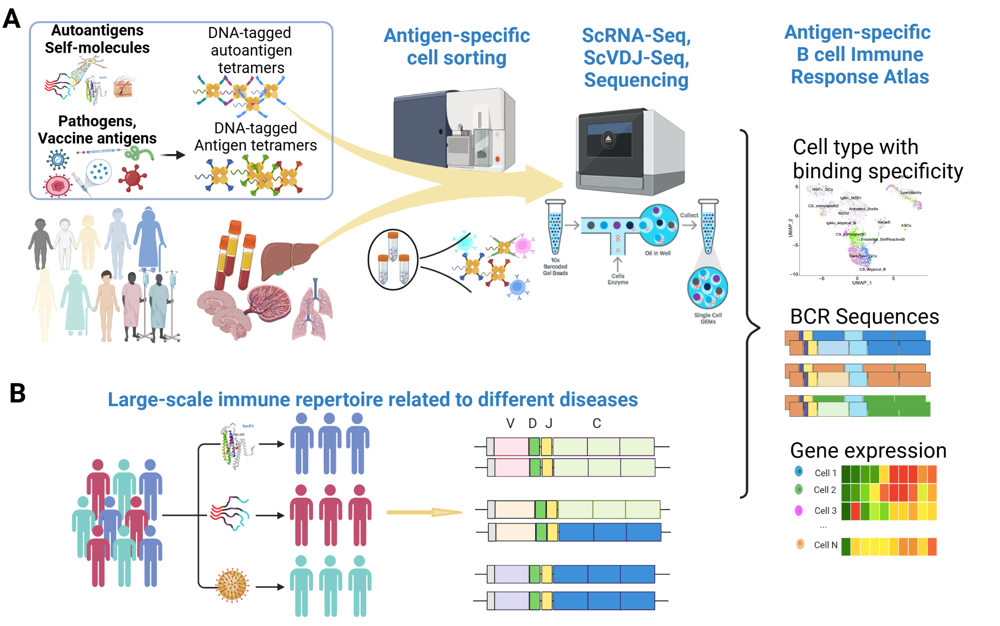
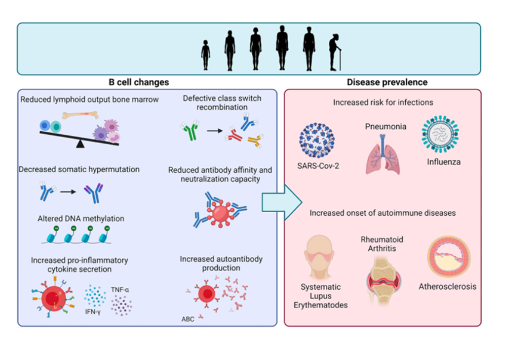
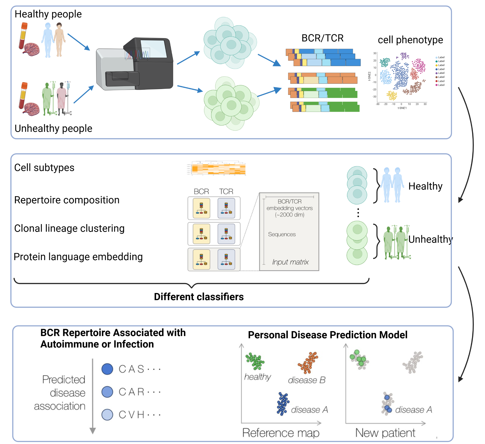

B cells are the immune system’s intelligence agents, recognizing pathogens and triggering immune defenses. However, B cells with different B cell receptors (BCRs) vary in antigen specificity and response breadth, affecting immune activation, antibody quality, memory stability, and vaccine efficacy.
To overcome traditional limitations, we developed single-cell DNA-tag-based antigen specificity identification and HLA sequencing to precisely map BCR-antigen interactions. Using AI-driven models, we build a high-resolution BCR-antigen matching system to predict B cell immune responses, ultimately enhancing vaccine design and personalized immunotherapy.
B cell development mirrors human learning: in childhood, they “train” to recognize diverse antigens and form a broad immune memory. Over time, this memory expands, allowing efficient immune responses while maintaining tolerance. However, as B cells age, their response slows, memory deteriorates, and they may malfunction, leading to autoimmune diseases, infections, or impaired immune recovery post-transplantation.
We use multi-omics and machine learning to track B cell clonal evolution across different ages and diseases. By mapping changes in antigen specificity, response speed, and memory persistence, we refine immunotherapies, anti-aging immune interventions, and disease-targeted immune regulation, ensuring B cells function optimally throughout life.
We go beyond AI-based data analysis by creating “Virtual B Cells”—AI-powered models that simulate and predict B cell behavior. These models integrate multi-omics and deep learning to forecast antigen recognition, clonal evolution, and immune response dynamics.
By virtually replicating B cell responses to antigens, immune memory formation, and functional shifts in autoimmune diseases, infections, or aging, we can test immune interventions in silico. This enables smarter vaccine design, personalized immunotherapies, and antibody drug development, providing a next-generation AI-driven platform for precision immune regulation.
